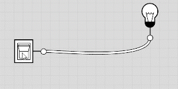
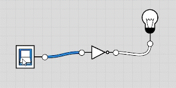
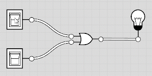

Les valeurs booléennes
Un peu d'histoire
George Boole (1815-1864) est un mathématicien et logicien britannique connu pour avoir créé la logique moderne, appelée algèbre de Boole.
Cette algèbre binaire n'accepte que deux valeurs, Vrai ou Faux, 0 et 1, et a donc d'importantes et nombreuses applications en informatique.
Introduction
Pour rappel, en mathématiques, une proposition est une phrase qui est soit vraie, soit fausse. Par exemple, la proposition "1 plus 1 égal 11" est fausse, tandis que la proposition "7 plus 2 égal 9" est vraie. Pas les deux à la fois, c'est le principe du tiers-exclus.
Par exemple, que diriez-vous de ces phrases ?
-
A : Vous êtes en classe de première.
-
B : Antoine de Saint-Exupéry a écrit Le Petit Prince.
-
C : La Terre est plate.
-
D : \(3 \cdot 4 = 12\).
-
E : La lettre
'e'est dans le mot'abracadabra'. -
F : Georges Perec a écrit un roman de près de 300 pages sans aucune lettre e.
-
G : \(2^{10} < 10^3\).
-
H : La couleur orange est la plus belle des couleurs.
-
I : Dieu existe.
Algèbre de Boole
Les booléens
L'algèbre de Boole consiste à étudier des opérations sur un ensemble uniquement constitué de deux éléments qu'on appelle booléens. Selon le contexte, ces deux élements sont notés :
-
Faux / Vrai
-
0 / 1
-
False/Trueen Python -
 /
/ 
-
etc.
Les opérateurs logiques
Les opérations fondamentales sur cet ensemble de valeurs sont les opératations logiques (l'opération d'addition ou de multiplication ne fait pas sens ici). En posant \(x\) et \(y\) deux booléens, on a les opérations suivantes :
-
La négation, que l'on note \(\bar{x}\), ou plus simplement "NON x",
not xen Python. -
La conjonction, que l'on note \(x \land y\), ou plus simplement "x ET y",
x and yen Python. -
La disjonction, que l'on note \(x \lor y\), ou plus simplement "x OU y",
x or yen Python
Le résultat de ces opérateurs entre booléens est un booléen. On peut définir une table de vérité pour définir toutes les possibilités :
| \(x\) | \(\bar x\) |
|---|---|
|
|
|
|
Ainsi, par exemple en Python :
>>> not False
True
>>> not True
False
| \(x\) | \(y\) | \(x \land y\) |
|---|---|---|
|
|
|
|
|
|
|
|
|
|
|
|
Ainsi, par exemple en Python :
>>> True and False
False
>>> True and True
True
| \(x\) | \(y\) | \(x \lor y\) |
|---|---|---|
|
|
|
|
|
|
|
|
|
|
|
|
Ainsi, par exemple en Python :
>>> True and False
False
>>> True and True
True
Python
Type bool et opérateurs de comparaison
On rappelle qu'il existe un type booléen en Python bool. Une variable de ce type ne peut prendre que deux valeurs, soit False soit True.
>>> type(True)
<class 'bool'>
>>> x = False
>>> x
False
>>> type(x)
<class 'bool'>
| Opérateur | Signification | Symbole mathématiques |
|---|---|---|
== |
"est égale à" | \(=\) |
!= |
"est différent de" | \(\ne\) |
< |
"est inférieur à" | \(<\) |
<= |
"est inférieur ou égale à" | \(\leq\) |
> |
"est supérieur à" | \(>\) |
>= |
"est supérieur ou égale à" | \(\geq\) |
On peut aussi rajouter l'opérateur d'appartenance in qui renvoie un booléen :
| Opérateur | Signification | Symbole mathématiques |
|---|---|---|
in |
"appartient à" | \(\in\) |
not in |
"n'appartient pas à" | \(\notin\) |
Exemples
>>> a = 2
>>> a == 3
False
>>> a == 2
True
>>> a != 1
True
>>> a > 2
False
>>> a <= 5
True
>>> a % 2 == 0
True
>>> x = (0 == 1)
>>> x
False
>>> y = (3 + 2 == 5)
>>> y
True
>>> 'e' in 'abracadabra'
False
>>> 'b' in 'abracadabra'
True
>>> 'A' not in 'abracadabra'
True
>>> not True
False
>>> True and False
False
>>> True and True
True
>>> False or True
True
Exercices
Exercice 1 - Savoir évaluer
Prédire si les variables suivantes contiennent le booléen True ou le booléen False :
a = (2 > 1)
b = (3 == 1+2)
c = (1 < 0)
d = (2 != 5/2)
e = (2 != 5//2)
f = ('a' == 'A')
g = not a
h = b and c
i = b or c
j = not c and (d or e)
Exercice 2 - Une table pour les gouverner tous
Construire la table de vérité de l'expression \((x \lor y) \land z\) où \(x\), \(y\) et \(z\) sont trois booléens.
Exercice 3 - Une formule mathématique en algèbre de Boole
À l'aide de tables de vérité, démontrer les lois de De Morgan :
-
\(\overline{x \lor y} = \overline{x} \land \overline{y}\)
-
\(\overline{x \land y} = \overline{x} \lor \overline{y}\)
Exercice 4 - Ou Exclusif
Une autre opération logique importante est le ou exclusif, ou disjonction exclusive.
C'est le sens du mot "ou" dans le langage commun. Quand on vous demande "Fromage ou dessert ?", c'est soit l'un, soit l'autre. Pas les deux? On note l'opérateur \(\oplus\), ou xor. En Python, il se note ^.
Voici sa table de vérité :
| \(x\) | \(y\) | \(x \oplus y\) |
|---|---|---|
|
|
|
|
|
|
|
|
|
|
|
|
-
Qu'est-ce qui change par rapport à la table de vérité du ou logique ?
-
Sauriez-vous écrire \(x \oplus y\) en fonctions des trois opérateurs logiques de base ?
Les portes logiques
Une partie plus ou moins hors programme. L'invention du transistor a permis de réaliser des circuits électroniques qui suivent l'algèbre de Boole, ce sont les portes logiques. Pour les trois opérations de base, nous en avons donc trois portes logiques :
Imaginons que j'ai un circuit composé d'un interrupteur et d'une ampoule :

La porte NON inverse la sortie :



S'amuser avec les portes logiques
Le site Logic.ly permet de tester justement toutes ces portes logiques et créer de petits circuits logiques !
Exercice 5 - Additionneur
-
Dresser la table de vérité de l'addition entre deux bits. Il y a deux sorties : le résultat et la retenue.
-
Schématiser cette table sous forme d'un circuit logique à deux entrées.
-
On veut additionner deux bits et un bit de retenue, dresser la table de vérité à trois entrées et deux sorties (bit de résulat et retenue).
-
Schématiser cette table sous forme d'un circuit logique à trois entrées.
-
Qu'ajouter au circuit logique précédent pour additionner deux octets entre-eux ?
Table de Karnaugh (Hors-Programme)
Une table de Karnaugh est une méthode graphique pour trouver ou simplifier une fonction logique à partir de sa table de vérité. Elle utilise le code de Gray (aussi appelé binaire réfléchi), qui a comme propriété principale de ne faire varier qu'un seul bit entre deux mots successifs.
Exemple de code de Gray
-
Sur 2 bits, le code de Gray est : 00, 01, 11, 10.
-
Sur 3 bits, on a : 000, 001, 011, 010, 110, 111, 101, 100.
Un tableau de Karnaugh peut être vu comme une table de vérité particulière, à deux dimensions, destinées à faire apparaître visuellement les simplifications possibles.
-
Par exemple, on a la table de vérité à 4 entrées, A, B, C et D :
A B C D Sortie 0 0 0 0 0 0 0 0 1 1 0 0 1 0 0 0 0 1 1 1 0 1 0 0 0 0 1 0 1 1 0 1 1 0 1 0 1 1 1 1 1 0 0 0 0 1 0 0 1 1 1 0 1 0 0 1 0 1 1 1 1 1 0 0 0 1 1 0 1 1 1 1 1 0 1 1 1 1 1 1 Déterminer une formule booléenne simple ici semble complexe.
-
On dresse le tableau de Karnaugh à deux dimensions en suivant le code de Gray pour les entrées :
AB/CD 00 01 11 10 **00 ** 0 1 1 0 **01 ** 0 1 1 1 **11 ** 0 1 1 1 **10 ** 0 1 1 0 -
Visuellement, on voit que si D vaut 1, alors la sortie est nécessairement à 1. On voit aussi que si B vaut 1 ET que C vaut 1 alors la sortie est nécessairement à 1.

-
Ecrire la formule booléenne : \(S = D \lor (B \land C)\)
Pour les tables à 4 variables, de préférence procéder dans l'ordre suivant :
- le rectangle 16 cases (tout le tableau)
- les rectangles 8 cases (double colonnes/lignes)
- les rectangles 4 cases (colonne/ligne/carré)
- les rectangles 2 cases
- enfin les cases uniques.
Exercice 6 - Quelques tables à simplifier
-
Dresser la table de Karnaugh et trouver la formule booléenne de :
A B Sortie 0 0 0 0 1 1 1 0 0 1 1 1 -
De même pour :
A B C Sortie 0 0 0 ** 1** 0 0 1 ** 0** 0 1 0 ** 1** 0 1 1 ** 0** 1 0 0 ** 1** 1 0 1 ** 1** 1 1 0 ** 1** 1 1 1 ** 1** -
Et un dernier pour la route :
A B C D Sortie 0 0 0 0 1 0 0 0 1 0 0 0 1 0 1 0 0 1 1 0 0 1 0 0 0 0 1 0 1 1 0 1 1 0 0 0 1 1 1 1 1 0 0 0 1 1 0 0 1 0 1 0 1 0 1 1 0 1 1 0 1 1 0 0 0 1 1 0 1 0 1 1 1 0 0 1 1 1 1 0
Exercice 7 - Décodeur 7 segments
Un afficheur 7 segments est un composant électronique qui permet d'afficher des motifs graphiques, notamment des chiffres :

Il est composé de 7 segments lumineux désignés par les lettres A à G :

Soit 4 entrées \(e_3, e_2, e_1\) et \(e_0\) représentant un chiffre. Par exemple : l'entrée 1001 représente le chiffre 9.
-
Dresser la table de vérité pour le segment D et E.
-
Pour chacune de ces tables, dresser la table de Karnaugh et déterminer la formule booléene associée.
-
Sur un même schéma (mêmes entrées \(e_0, e_1, e_2\) et \(e_3\)), représenter ces deux formules booléennes par des portes logiques.